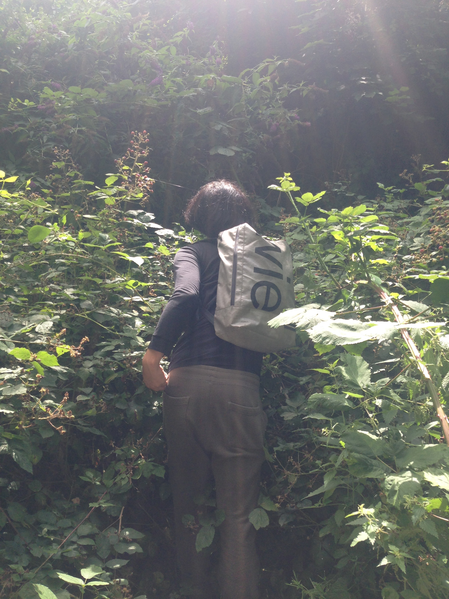

back to home
blackberry jam
go forth and forage!
- blackberries (go pick from hedge)
- whatever weight blackberries you have, a bit less than that of sugar
- 1 lemon per pound blackberries
- jars
- before you start, sterilise your jars with boiling water. you'll want about 2 regular jars per pound of blackberries.
- wash the blackberries, and put them in a pan with the lemon juice on a medium heat. at the same time, warm the sugar very gently in the oven (honestly we're not sure if you need to do this bit, but we did it the first time and it made great jam, and haven't not done it since)
- after about 10 minutes, when the blackberries have really started to break down, add the sugar, stir well, and bring the whole mixture to the boil.
- boil for somewhere between 7-15 minutes, until the jam mixture forms a long drip on the back of a spoon or sets on a fridged plate. pour into the jars, and tighten the lids immediately (they should pop down as the mixture cools).
good on toast!